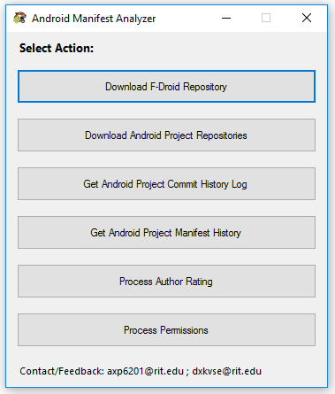
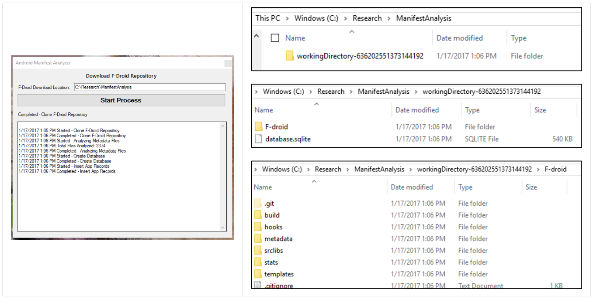
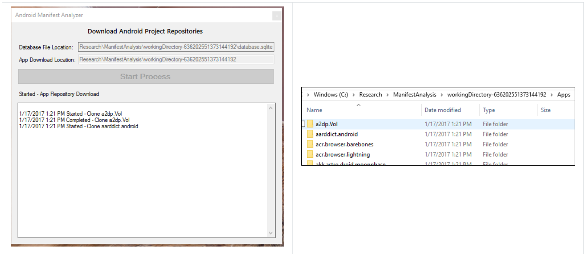
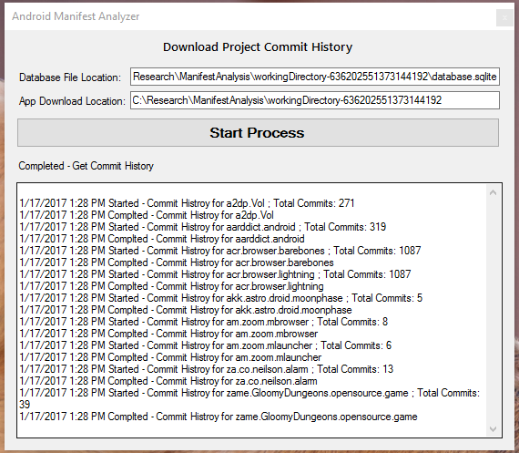
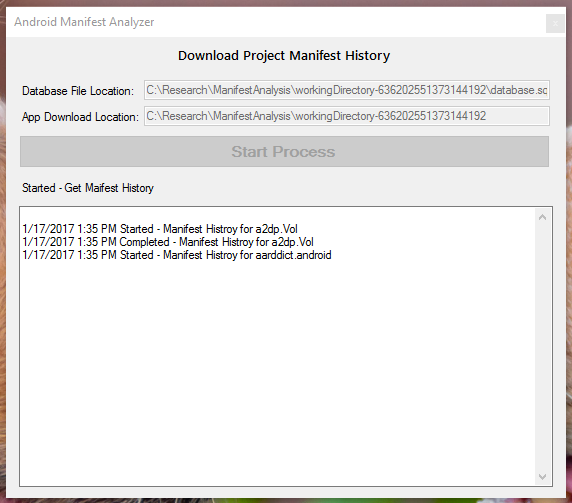
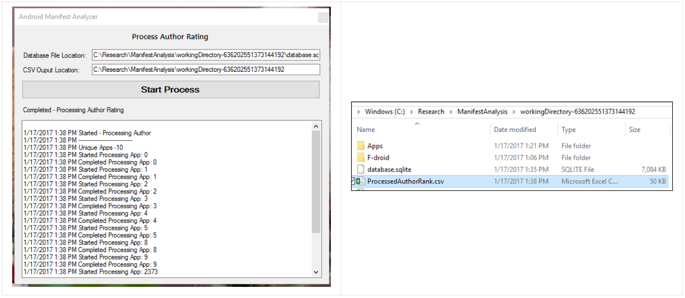
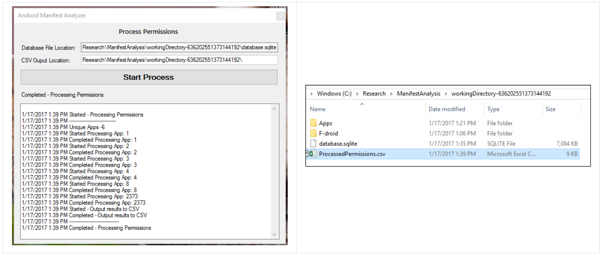

oSARA analyzes the AndroidManifest.xml file associated with Android code repositories to capture the history
of all permission changes. The motivation for building this tool was to understand the types of users that
make permission changes to apps, how frequently the persmissions are added & reverted and when in the app's
commit history the changes are made.
Setup & Running
The tool was developed as a Windows Form Application using Visual Studio 2017. It utilizes F-Droid's collection
of open source Android code repositories to perform the analysis on. Presently, the tool targets repositories
hosted on GitHub. The source code for the tool is available
here.
To run the tool, either:
- clone/download the GitHub repository. Open the solution in Visual Studio and build the project
- extract the files from the executable.zip archive and run 'AndroidCodeAnalyzer.exe'
It is recommend that the following sequence be followed when running the tool:
- F-Droid Repository
- Download Android Projects
- Get Project Commit History
- Get Manifest History
- Process Author Rating
- Process Permissions
Screens
Main/Home Screen
The following is the main/home screen of the tool. From this screen, the user can perform the required download/processing tasks.

Download F-Droid Repository
The following screen is utilized to download the F-Droid repository. The download location needs to be procreated and provided prior to starting the process. The database will also be created in this location.

Download Android Projects
The following screen is utilized to download the Android project repositories. The download location needs to be procreated and provided prior to starting the process. Database location should point to the 'database.sqlite' file created in the previous step.

Get Project Commit History
The following screen is utilized to download the commit history for the Android projects. The database location should point to the 'database.sqlite' file and the download location should point to same location entered in the previous step.

Get Manifest History
The following screen is utilized to download manifest file history of the Android project. The database location should point to the 'database.sqlite' file and the download location should point to same location entered in the previous step.

Process Author Rating
The following screen is utilized to calculate the author rating (i.e. Developer Commit Ratio). The tool outputs the data into a CSV file. The database location should point to the 'database.sqlite' file. The CVS output location should be created prior to running the tool (delete the csv file if already exists in the location).

Process Permissions
The following screen is utilized to provide a Add/Remove history of the permissions associated with an app. The tool outputs the data into a CSV file. The database location should point to the 'database.sqlite' file. The CVS output location should be created prior to running the tool (delete the csv file if already exists in the location).
